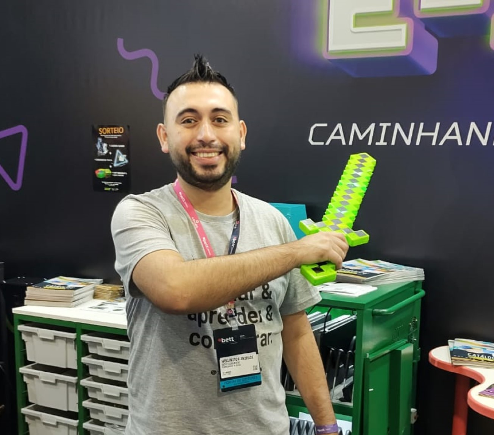

Wellington Luiz de Andrade
Orientador do Laboratório Maker
Sou responsável por articular atividades e projetos com professores e estudantes que promovem a cultura maker.

Nathã Luis Schug
Orientador de Tecnologia Educacional
Sou responsável pela gestão dos laboratórios e equipamentos de tecnologia, além de articular atividades que promovem a cultura digital.